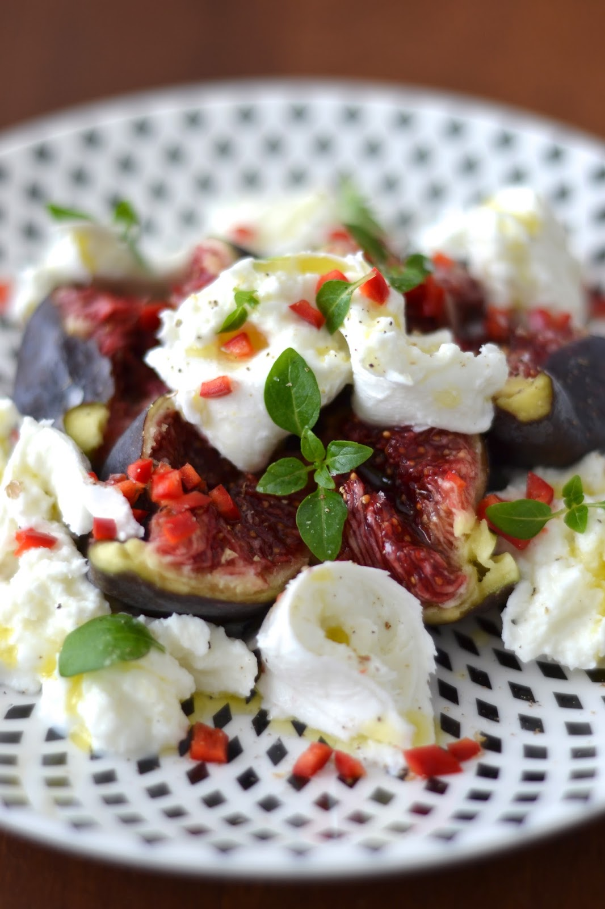

Recette : Salade aux figues et mozzarella

Ingrédients :
Préparation :
- Égouttez la mozzarella et coupez-la en rondelles assez fines.
- Fouettez le jus de citron avec l’huile d’olive, le sel et le poivre noir du moulin.
- Lavez les figues, séchez-les et coupez-les en rondelles.
- Déposez les rondelles de figues sur les assiettes de service et intercalez les tranches de mozzarella entre les lamelles de figues. Réservez au frais pendant une heure.
- Juste avant de servir, faites griller les pignons de pin à sec dans une poêle antiadhésive sur feu moyen.
- Parsemez les pignons de pin sur les figues, ajoutez les tomates cerises coupées en deux et les feuilles de menthe ciselées.
- Répartissez la vinaigrette sur les figues et servez aussitôt.
Retour aux entrées